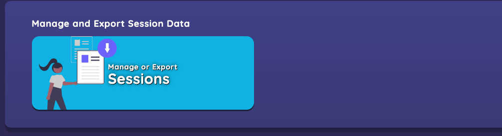
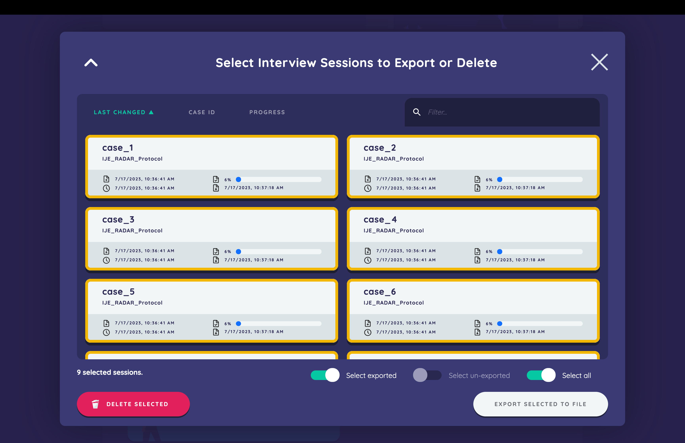
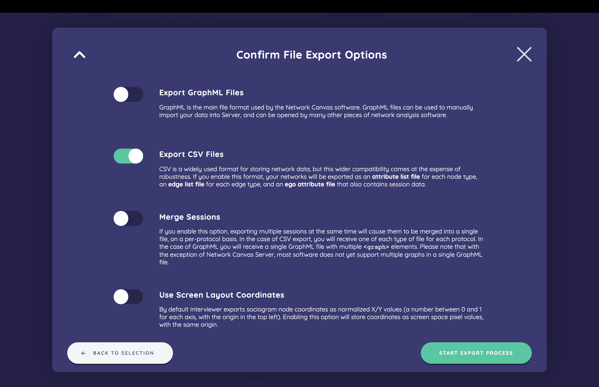
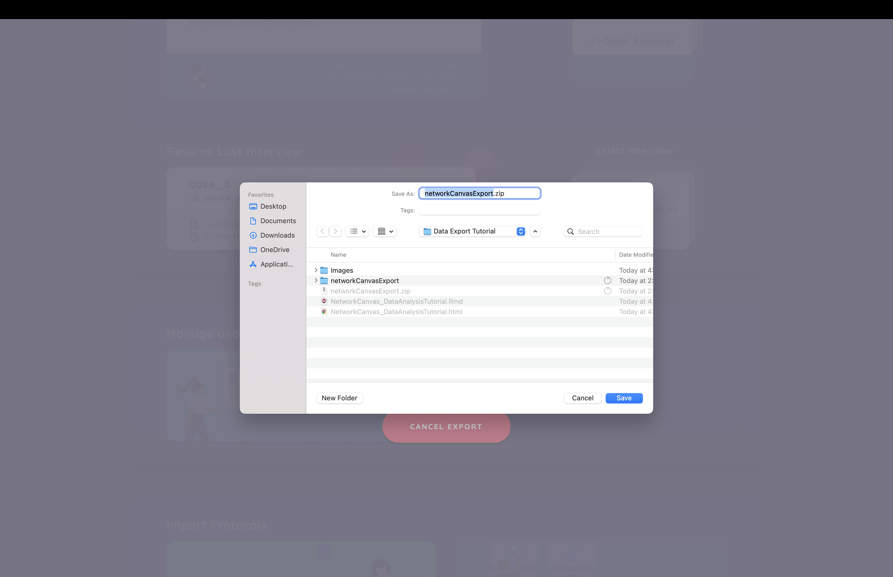
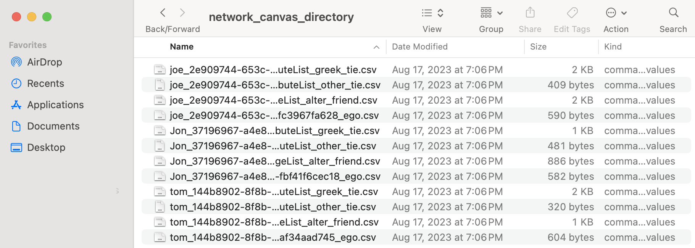

nc_read Functionnc_read.RmdNetwork Canvas is a free and open-source software for collecting egocentric network data. While other tools exist for capturing these data, Network Canvas is designed around the needs of both researchers and participants alike, making it an increasingly popular tool for collecting egocentric networks. Network Canvas protocols are developed using a desktop application, entitled Network Canvas Architect. Once a researcher has constructed their protocol in Architect, the protocol is administered to participants either natively on a device running the Network Canvas Interviewer application, or remotely in a web browser using Network Canvas Fresco, currently in development.
Given Network Canvas’s increasing popularity, ideanet
offers a function for reading data collected using Network Canvas,
nc_read. nc_read allows users to make quick
use of Network Canvas data in R, and was developed using the input of
Network Canvas developers. The following vignette provides an overview
of how to export data from Network Canvas Interviewer or Fresco, how to
read it into R using nc_read, as well as how to quickly
process these data and generate measurements using
ideanet’s ego_netwrite function.
The first step in exporting data from Network Canvas Interviewer is to navigate to the Manage and Export Session Data section of the Interviewer app.

Next, you’ll indicate which sessions you want to export by selecting the appropriate cards and clicking “Export Selected To File.”

Next, we’ll confirm export options. Interviewer and Fresco provide
the option to export data as either a GraphML file or a directory of CSV
files. nc_read is only designed to read in the directory of
CSVs, so users will want to select only this option. We also recommend
that the “Merge Sessions” option be unselected.
NOTE: Interviewer and Fresco allow users to export data
collected by different Network Canvas protocols simultaneously. However,
nc_read is designed to only work with data generated by a
single protocol. Please ensure that all interviews being exported are
from the same protocol. nc_read will check if this is the
case and return an error message if it finds data frome multiple
protocols.

After a short wait, we simply select where we would like the zip file containing our CSV files to be saved on our computer. We will need to unzip the file before starting our data analysis described below.

Network Canvas Fresco generates data files identical to those generated using Interviewer. However, the process for exporting these files differs slightly. Once interviews have been completed using Fresco, users can export data from the Interviews page (you can also view the export status of each interview from this page).
To export selected interviews:
Navigate to the interviews page in the dashboard.
Select the checkboxes next to the interviews you wish to export.
Click the “export selected” button at the bottom of the table.
Select “CSV” as the export options that you wish to use.
Click “Start export process”.
To export all interviews:
Navigate to the “interviews” page in the dashboard.
Click the “Export Interview Data” button.
Select “Export all interviews” from the dropdown.
Select “CSV” as the export options that you wish to use.
Click “Start export process”.
To export all unexported interviews:
Navigate to the “interviews” page in the dashboard.
Click the “Export Interview Data” button.
Select “Export all unexported interviews” from the dropdown.
Select “CSV” as the export options that you wish to use.
Click “Start export process”.
Provided you selected all export options described to this point, the screenshot below provides an example of what a Network Canvas data directory should look like. All CSV files in this folder correspond to the a single Network Canvas protocol, regardless of the specific data contained in each file.

While users may be tempted to organize these CSVs by the kind of data
they store, nc_read requires all files to remain in the
same directory at the same level. nc_read automatically
organizes the data contained in each CSV file according to the naming
conventions Network Canvas gives to each file, eliminating the need for
users to do so themselves. If your directory of CSVs looks like the
example above, you should be ready to start using
nc_read.
nc_read
The nc_read function takes three arguments:
path: A character value indicating the directory in
which Network Canvas CSVs are located.protocol: A character value indicating the pathname of
the Network Canvas protocol file (a .netcanvas file)
corresponding to the data being read. Because some users may possess
data without having the corresponding protocol file on hand (as might
occur in a secondary data analysis), protocol files are not required for
using nc_read. However, including the protocol file better
ensures accurate encoding of categorical variables in the data.cat.to.factor: A logical value indicating whether
categorical variables, originally stored as a series of
TRUE/FALSE columns, should be converted into a
single factor column.Below is an example of how the nc_read is used in
practice:
nc_data <- nc_read(path = "~/Desktop/network_canvas_directory/",
protocol = "~/Desktop/protocol_directory/nc_protocol.netcanvas"
cat.to.factor = TRUE)nc_read will read in all CSV files located in the
specified directory, process them, and return a list containing a
formatted ego list (named egos), alter list (named
alters), and alter-alter edgelist (if applicable, this will
be named alter_edgelist). If multiple edge types exist for
ego-alter and/or alter-alter ties, edgelists for each type of tie are
stored as individual data frames as elements in a list.
nc_merge
In some cases, nc_read will fail to merge CSVs that are
exported for individual responses. This can occur when R detects a
variable to be of one class (such as a numeric) in one file but detects
the same variable to be of a different class (such as a character) in
another file. Users can sidestep this issue by using the
nc_merge function to merge these files into a format that
nc_read will successfully process.
To use nc_merge, users must specify the path of
individual CSVs exported from Network Canvas that would normally be
given to nc_read. nc_merge takes a second
argument, export_path, that specifies a second, separate
directory where merged CSV files are to be stored. Once users run
nc_merge, they can use nc_read as they
normally would. However, users should ensure that the directory
specified in nc_read’s path argument matches
that specified as export_path in nc_merge:
nc_read with ego_netwrite
The various dataframes created by nc_read are formatted
for use with ideanet’s ego_netwrite function.
If a Network Canvas protocol features only one type of alter and only
one type of alter-alter tie, users need only specify the
egos, alters, and alter_edgelists
items as the ego list, alter list, and alter-alter edgelist
(respectively) where ego_netwrite asks for them.
ego_netwrite also asks users to specify the names of
columns containing unique identifiers in the ego list, alter list, and
alter-alter edgelist. For your convenience, nc_read creates
new identifier columns whose simple names can be used in lieu of Network
Canvas’s original identifiers:
nc_netwrite <- ego_netwrite(egos = nc_data$egos,
ego_id = "ego_id",
alters = nc_data$alters,
alter_id = "alter_id",
alter_ego = "ego_id",
alter_alter = nc_data$alter_edgelists,
aa_ego = "ego_id",
i_elements = "from",
j_elements = "to")Network Canvas allows users to build protocols that capture multiple “types” of alters. This feature is intended to collect distinct ego networks from participants whose nodes are categorically different from one another. For example, a single protocol may capture networks of persons, places, and organizations to which participants are connected. Although one could hypothetically identify ties between these different types of nodes and treat them as different “modes” in a bipartite network, Network Canvas is designed such that alters may only be tied to other alters of the same type.
This has important implications for how to use nc_read’s
output with ego_netwrite: users should use
ego_netwrite to process networks associated with only one
alter type at a given time. In practice, this means using only one
dataframe contained within the alters element of
nc_read’s output at a time. Further, users must take care
to include only the alter-alter edgelist(s) associated with this alter
type as ego_netwrite’s input.
While Network Canvas does not record ties between alters of different
types, it still supports the capture of different types of ties
between two alters of the same type. For example, a Network Canvas
protocol capturing people in a participant’s network can record whether
these people are connected to each other as friends, family
members, romantic partners, or some combination of these
categories. When processing data from this protocol,
nc_read will store three data frames within the
alter_edgelists item in its output, each containing the
alter-alter edgelist for a particular type of tie.
ego_netwrite can process and analyze networks containing
all three of these types of ties at once, but users will have to reshape
nc_read’s output a bit to do so. This reshaping entails
combining all alter-alter edgelists pertinent to a single alter type
into a single data frame. The code below shows how one might prepare
their nc_read output to analyze multirelational ego
networks using the example described above:
# Extract ego list and pertinent alter list and alter-alter edgelists
egos <- nc_data$egos
people <- nc_data$alters$people
people_ties <- dplyr::bind_rows(nc_data$alter_edgelists$friends,
nc_data$alter_edgelists$family,
nc_data$alter_edgelists$romantic)
# Feed these objects into `ego_netwrite` and indicate identifier variables
nc_people <- ego_netwrite(egos = egos,
ego_id = "ego_id",
alters = people,
alter_id = "alter_id",
alter_ego = "ego_id",
alter_alter = people_ties,
aa_ego = "ego_id",
i_elements = "from",
j_elements = "to",
aa_type = "edge_type")Upon completion, ego_netwrite returns its own list of
outputs containing an updated ego list, alter list, and alter-alter
edgelist. Included in these objects are summary measures for each
individual node and ego network recorded in the Network Canvas dataset.
ego_netwrite also generates an overall summary of the
Network Canvas dataset, which allows users to identify the typical
properties of networks in their data. And should users wish to perform
additional tasks on their networks, including visualization,
ego_netwrite creates igraph objects for each
individual ego network contained in the dataset. While we do not discuss
these outputs at length in this vignette, a detailed summary of them can
be found in this package’s Analyzing Egocentric Networks
vignette:
vignette("ego_netwrite", package = "ideanet")nc_read with egor
Some users may prefer to analyze Network Canvas data with the
egor package instead of ego_netwrite.
egor is especially convenient for fitting exponential
random graph models (ERGMs) using egocentric data, which allow
researchers to simulate and estimate global network structures for
settings where sociocentric data capture is not possible.
Creating egor objects from nc_read’s output
follows a similar process to that of using ego_netwrite.
However, it requires the additional step of installing egor
if you have not already done so:
install.packages("egor")Once the egor package is installed, users can use the
egor function to create their object. Just like
ego_netwrite, the egor function asks users for
an ego list, and alter list, and an alter-alter edgelist. Users must
also provide the names of columns containing unique identifiers linking
the ego list, alter list, and alter-alter edgelist, just as they have to
do when using ego_netwrite:
# Create `egor` object
nc_egor <- egor::egor(alters = nc_data$alters,
egos = nc_data$egos,
aaties = nc_data$alter_edgelists,
ID.vars = list(
ego = "ego_id",
alter = "alter_id",
source = "from",
target = "to"
))
# Inspect and analyze `egor` object
summary(nc_egor)
egor::ego_density(nc_egor)Unlike ego_netwrite, egor does not contain
an argument allowing users to identify whether alter-alter ties are of
multiple types. If users working with egor have networks
containing a single type of alter but multiple types of ties between
alters, they may find it best to create separate egor
objects for each type of alter-alter tie present in the network:
# Extract ego list and pertinent alter list and alter-alter edgelists
egos <- nc_data$egos
people <- nc_data$alters$people
friends <- nc_data$alter_edgelists$friends
family <- nc_data$alter_edgelists$family
romantic <- nc_data$alter_edgelists$romantic
# `egor` object for friendship ties
friends_egor <- egor::egor(alters = people,
egos = egos,
aaties = friends,
ID.vars = list(
ego = "ego_id",
alter = "alter_id",
source = "from",
target = "to"
))
# `egor` object for family ties
family_egor <- egor::egor(alters = people,
egos = egos,
aaties = family,
ID.vars = list(
ego = "ego_id",
alter = "alter_id",
source = "from",
target = "to"
))
# `egor` object for romantic ties
family_egor <- egor::egor(alters = people,
egos = egos,
aaties = romantic,
ID.vars = list(
ego = "ego_id",
alter = "alter_id",
source = "from",
target = "to"
))On a concluding note, it is quite easy for users to employ
egor and ego_netwrite for different purposes.
ego_netwrite provides users the option to create an
egor object alongside its other standard outputs. Selecting
this option, which is further described in the Analyzing Egocentric
Networks vignette, allows users to take advantage of a wider set of
tools for egocentric network analysis.